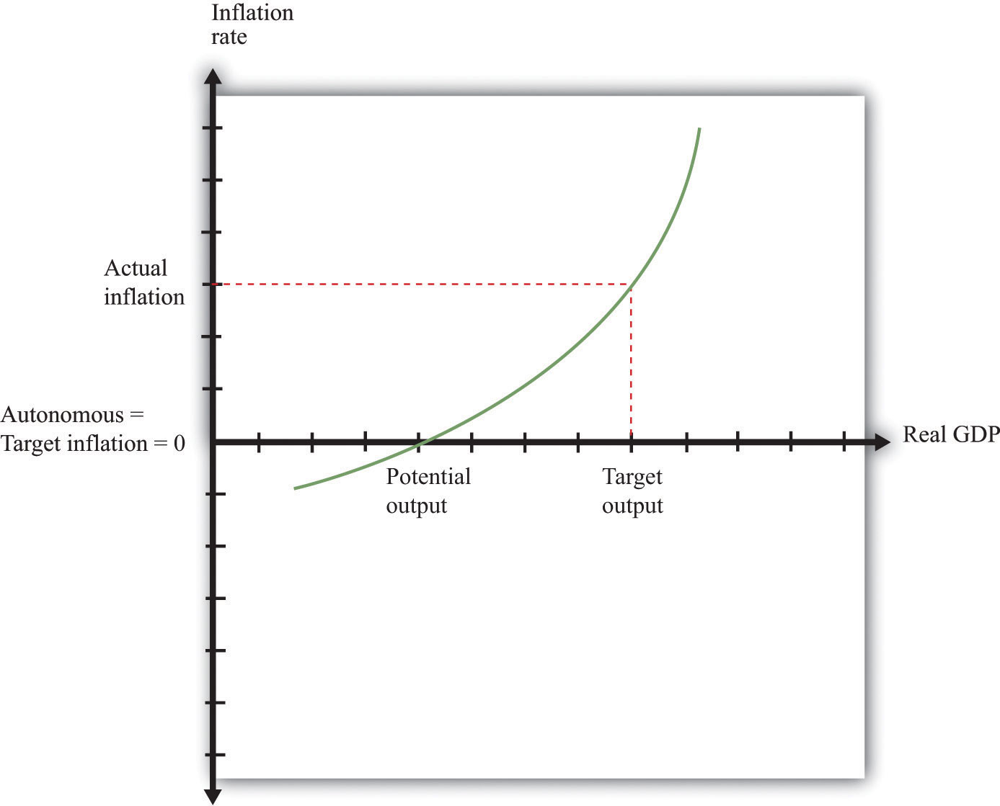
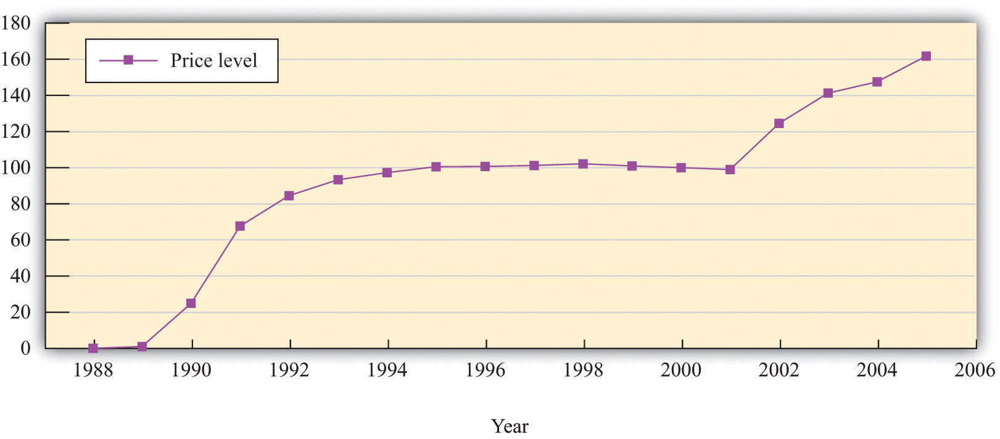

After you have read this section, you should be able to answer the following questions:
We have argued so far that inflation is caused by excessive money growth, which in turn leads to increases in the velocity of money. But we have also documented that rapid inflations are damaging to the functioning of an economy. There is therefore a deeper question to be asked: why on earth do monetary authorities pursue policies that lead to such disastrous outcomes?
Suppose your country is at war. Wars are expensive. Not only are there soldiers to be paid and kept supplied, but your valuable aircraft and tanks are liable to be destroyed by the enemy while you are in turn throwing costly ammunition and missiles at them. How do governments pay for all these expenses? One thing that the government can do is to tax the population to pay these bills. It may not be feasible to collect enough tax revenue in the time of a war, however. Many governments instead borrow during times of large expenses. This allows the government to spread the tax burdens over time.
So far, taxation and borrowing are the only two possibilities that we have considered. But there is a third possibility: a government can simply print the money it needs. There is a government budget constraint that saysThe government budget constraint is discussed in Chapter 29 "Balancing the Budget".
deficit = change in government debt + change in money supply.The left side of this equation is the deficit of the government. The deficit is the difference between government outlays and government receipts. The right side of this equation describes how the government finances its deficit. This equation says that the government can finance its deficit by issuing either new government bonds or new money.
Toolkit: Section 31.33 "The Government Budget Constraint"
You can review the details of the government budget constraint in the toolkit.
There is a puzzle here. Money is just a piece of paper with writing on it. The government can print it at will. Yet the government can take these pieces of paper and exchange them for goods and services of real value. It can pay soldiers, or nurses, or construction workers who are building roads. It can print money, hand it over to Airbus or Boeing, and get a new airplane. So who is really paying in this case?
We already know everything we need to know to figure out the answer. When the government prints more money, prices will eventually increase. This comes directly from the quantity equation once we remember that real variables are independent of the money supply in the long run. In the long run, the extra money will just result in higher prices and no additional output. And increased prices mean that existing money becomes less valuable. If the price level increases by 10 percent, existing dollar bills are worth 10 percent less than they were; they will buy (roughly) 10 percent less in terms of goods and services. Inflation is exactly like a tax on the money that people currently hold in their wallets and pocketbooks. Indeed, we say that there is an inflation taxA tax occurring when the government prints money to finance its deficit. when the government prints money to finance its deficit.
Examine the government budget constraint again. If we write out the deficit in full, the equation says
government purchases + transfers − tax receipts = change in government debt+ change in money supply.Suppose that government purchases increase, say due to a war, by $100 billion. This equation tells us that, to finance this expense, the government could
In some sense, these are all versions of the same thing: to finance the spending of $100 billion, the government will have to increase taxes. Those taxes may be paid now, they may be paid later (when the government repays the debt), or they may be paid through the inflation tax. The government must decide how to best increase taxes to finance the extra spending, and the inflation tax is one option available to the government.
It is hard to imagine that a government acting in the interests of its citizens would choose to bring about hyperinflation. Why do governments apply such misguided policies? The leading explanations all fall under the heading of a “weak” central bank. A weak central bank is unable to pursue its normal goal of price stability and instead becomes a tool of other interests, such as the fiscal authorities.
A government entity, such as a central bank or the treasury, suffers from a commitment problemThe situation when a government is not able to make credible promises to pursue actions regardless of how others respond to those actions. when it is not able to make credible promises to pursue certain actions. Suppose a central bank wishes to pursue a strategy of stabilizing prices. If the economy is in a deep recession, the central bank might instead come under pressure to reduce interest rates. Reductions in interest rates require the central bank to increase the money supply and ultimately create inflation, yet if it could commit to a policy, the central bank might prefer to focus on inflation and ignore the recession. Let us see how these types of commitment problems work through some examples.
The level of potential output in an economy is not necessarily the ideal level of output. Even when the economy is at potential, there is some unemployment and some spare capacity. The monetary authority therefore might have a target level of output that is above potential output. Suppose (for simplicity) that its target level of inflation is zero. To understand what will happen, we use our model of price adjustment:
inflation rate = autonomous inflation − inflation sensitivity × output gap.Toolkit: Section 31.31 "Price Adjustment"
You can review the details of price adjustment in the toolkit.
To begin with, suppose that everyone in the economy believes that there will be zero inflation, so autonomous inflation is zero. Were output equal to potential output (so the output gap is zero), then actual inflation would also be zero. This situation is summarized in Figure 26.9 "The Gains to Inflation". However, if the Fed follows a Taylor ruleA rule for monetary policy in which the target real interest rate increases when inflation is too high and decreases when output is too low., it will react to the fact that output is below its target by reducing real interest rates with the aim of increasing spending and output. The price adjustment equation then tells us that there will be positive inflation. This outcome is also shown in Figure 26.9 "The Gains to Inflation" as the combination of the target level of output and a positive inflation rate.
Figure 26.9 The Gains to Inflation
If target inflation = autonomous inflation = 0, but target output is above potential output, then the Fed will reduce the real interest rate and create more output to meet its target output. This will create inflation.
This is not the end of the story. Everyone in the economy is predicting zero inflation, yet the Fed is using its monetary policy to increase output and create positive inflation. Over time, people will notice that their expectations are wrong and will start to expect positive inflation instead. This results in an increase in autonomous inflation and a shift in the relationship between inflation and output.
At that point the Fed will have an incentive to create still more inflation to pursue its goal of output above potential. But additional inflation is costly to the Fed because it is now moving away from its target of zero inflation. Eventually inflation will be so high that the Fed no longer wants to create more inflation to increase output. The economy will end up with a positive inflation rate, where expectations of inflation are equal to actual inflation and no one is fooled. In the end, the Fed incurs an inflation rate above its target, yet it does not succeed in creating output above potential.
The final outcome involves costly inflation, but output remains at potential. Given that it cannot actually keep output above potential, the Fed would prefer zero inflation, yet it lacks the ability to commit to a zero-inflation policy. If the inflation rate is zero, the Fed has an incentive to create positive inflation.
The government budget constraint tells us that are three ways to fund spending: taxes today, the inflation tax, or debt (which means taxes at some future date). A government that has the best interests of its citizens at heart will decide on the best mix of these three. Optimists may believe that this is what governments try to do. Cynics might hold a very different view. Suppose—just suppose—that the leader of a government is more concerned with reelection than with sound economic policy and believes that her chances of reelection will be increased if she pledges not to increase taxes now or in the future. If this promise is credible, then the government budget constraint tells us that any increases in spending must be financed by money growth.
The monetary authority again has no power to commit to avoid inflation. The fiscal side of the government has set the level of spending and decided, based on the wishes of the political leaders, to have low taxes. Faced with this fiscal package, the monetary authority has no choice: it must print money to finance the government budget constraint. This story relies on the belief that individuals in the economy do not understand that the government, by its fiscal actions, is causing inflation and thus imposing a kind of tax.
A more extreme example arises when the government’s expenditures are so great that it simply cannot finance them with current taxation. This can occur in poorer economies where the tax base is low and the mechanisms for collecting taxes are often imperfect. Moreover, a government can finance its deficit through borrowing only if the public is willing to purchase government bonds. If a government is in fiscal trouble—if its tax and spending policies appear to the public to be unsustainable—it will have great difficulty persuading the public and the international investment community to buy government debt. Investors will demand a very high interest rate (including a risk premiumA part of the interest rate needed to compensate the lender for the risk of default.) to cover the possibility that the government may default on its debt. Interest rates on debt will increase.
At this point a government may find that the only option available to it is to finance its deficit through the printing of money. After all, no government wants to be in the position of being unable to pay its soldiers. The leaders of a country in such a position will decide to run the printing presses instead. The end result is inflation and, if the process gets completely out of control, hyperinflation. But from the government’s point of view, at least it buys it some time. Thus although moderate inflations are caused by poor monetary policy, hyperinflations are almost always originally caused by unsustainable fiscal policies.
Figure 26.10 "The Price Level in Argentina" shows the price level in Argentina from 1988 to 2005. Argentina experienced hyperinflation in the early 1990s. Prices were then stable for about a decade and then increased again in the early years of the 21st century. In Argentina, different regional governments have significant power over the decisions of the central government. (It is as if a state government in the United States could appeal for funds directly from Washington.) These transfers from the central government in turn must be funded either from tax revenues or by printing money. If a region is sufficiently powerful relative to the central government, then it is as if the regional government has the power to print currency.
Figure 26.10 The Price Level in Argentina
Source: International Monetary Fund World Economic Outlook database (http://www.imf.org/external/pubs/ft/weo/2010/01/index.htm).
A battle between regional governments can give rise to hyperinflation.Russell Cooper and Hubert Kempf, “Dollarization and the Conquest of Hyperinflation in Divided Societies,” Federal Reserve Bank of Minneapolis Quarterly Review, Summer 2001, accessed July 21, 2011, http://www.minneapolisfed.org/research/QR/QR2531.pdf. To simplify the issue, suppose that each region in Argentina has its own printing press. Each region can then independently undertake monetary policy by printing Argentine pesos and using those pesos to fund projects within their regions. The inflation tax is very tempting in these circumstances: a regional government can in effect tax people in other regions to help pay for its own projects. Why? Because printing money results in an inflation tax on everyone who has pesos. If money is printed in one region, some of the inflation tax will be paid by people in other regions who have pesos.
To be concrete, imagine you are a politician in Buenos Aires who wants to raise 100 million pesos for a project in that city. You could levy an income tax on citizens of your area. Alternatively, you could print 100 million pesos. If you impose the income tax, your own citizens must pay it all. If you impose the inflation tax, people living in other regions of Argentina pay some of the tax. Your constituents get the benefit, but others bear a large part of the costs. Acting in the interests of your constituents, you print the pesos. Of course, this story is true not only for you but also for the leaders in all regions. In the end, there is excessive money growth in the economy as a whole and high inflation. The monetary authorities are weak because no single authority controls the overall money supply.
The situation we have described is sometimes called a prisoners’ dilemmaThere is a cooperative outcome that both players would prefer to the Nash equilibrium of the game.. In a prisoners’ dilemma, the actions of one person imposes costs on others, and the behavior that is best for each individual decision maker (in this case, all the regional monetary authorities) is not best for the country as a whole.
Toolkit: Section 31.18 "Nash Equilibrium"
If you are interested in more detail on the prisoners’ dilemma game, you can review it in the toolkit.
Suppose a government faces a large expense today and can tax labor income to pay for it. One option is to increase income taxes today by a lot to finance this expense. This would cause a reduction in labor supply and thus in employment and real gross domestic product (GDP). This distortion in labor supply is an economic cost of the tax. Alternatively, the government could increase taxes a little bit today and a little bit in future years. This spreads out the tax over many years and leads to less distortion. The government budget constraint tells us that the government can spread out taxes by borrowing new and levying taxes later to pay off the debt.
If the government had access to a nondistortionary tax instead of income taxes, it would be better to use that tax instead. For a tax not to be distortionary, it must be the case that economic decisions (how much to buy and sell, how much labor to supply, etc.) do not change when the tax changes. At first glance, it seems that the inflation tax might fit the bill. Remember the inflation tax makes people’s existing stocks of money worth less in real terms. People have already decided how much money to hold. So if the government levies an inflation tax, it is not distortionary; people have already made their decisions on how much money they want to own.
But there is a danger here. Our argument rests on the idea that the decisions about which assets to hold have already been made by households. The inflation tax might be nondistortionary the first time that the government tried it. But people would rapidly come to anticipate that the government would be likely to use it again. At that point they would start changing their decisions about how much money to hold, and the tax would be distortionary after all.